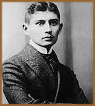
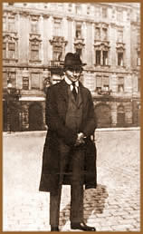

Franz
Kafka nasceu no dia 3 de julho de 1883, em Praga (atual República
Tcheca), cidade que na época pertencia à monarquia
austro-húngara. Cresceu nas influências de três
culturas distintas: tcheca, alemã e judaica. Filho de uma
família judia, Kafka foi oprimido em sua infância
e adolescência pelo seu pai, fazendeiro abastado que se
interessava apenas no sucesso material.
Estudou Direito na Universidade de Praga entre
1901 e 1906, onde conheceu Max Brod, grande amigo (seu futuro
biógrafo). Começou a freqüentar os círculos
literários de sua cidade, onde as opiniões críticas
se identificavam muito com as de Kafka. Teve uma influência
muito grande de autores como Heinrich von Kleist, Flaubert, Pascal
e Kierkgaard, além de todo o ambiente de Praga, na época
uma cidade medieval gótica, com elementos eslavos, alemães
e de barroco sombrio. Logo após sua formação,
empregou-se como inspetor de acidentes de trabalho.
Sempre teve muito êxito nos cargos que trabalhara,
mas se sentia frustrado por não conseguir dedicar mais
tempo à literatura que adorava. Teve uma vida emocional
conturbada com noivados e amores infelizes, mantendo durante toda
sua vida a companhia da solidão.
Kafka se destacou pela sua narrativa que obedece
à "necessidade de naturalizar", pela lucidez,
o absurdo da situação descrita. Em suas obras, Kafka
centraliza todas as coisas que tornam difícil viver em
nossa época, onde as organizações e as estruturas
em vez de atuarem em prol da pessoa humana, contra ela se colocam.
E o faz de modo alegórico, imitando a linguagem onírica,
como se tudo não passasse de um pesadelo, mas que é
uma realidade, contendo, entretanto, um sentido simbólico,
uma analogia com situações reais, absurdas, incompreensíveis,
que por vezes se configuram no curso de nossa vida cotidiana.
Sua
única obra publicada em vida foi A Metamorfose,
onde o autor expõe sua resignação pela vida
cotidiana com um toque de surrealismo. Escreveu inúmeros
contos, mas nunca chegou a publicá-los, achando que a sociedade
da época não aceitaria suas idéias de bom
grado.
A partir de 1917, Kafka permaneceu muitos períodos
em repouso por razão da tuberculose que lhe atacara vorazmente.
Em 1922, largou definitivamente seu emprego e passou a viver em
sanatórios e balneários. No dia 3 de junho de 1924,
morre Franz Kafka em Kierling, perto de Viena.
Suas obras-primas foram publicadas
após sua morte por seu amigo Max Brod, e repercutem até
hoje na literatura mundial, são elas O Processo
e O Castelo. As instruções do escritor
eram claras: destruir toda a sua ficção impressa
(exceto o livro Contemplação), seus artigos
publicados em jornal e também seus manuscritos. Brod não
atendeu a essas exigências e, graças ao seu empenho
em preservar os escritos do amigo, hoje conhecemos uma das mais
importantes realizações literárias do século
XX.
Suas obras tiveram grande influência
em movimentos artísticos como o surrealismo, o existencialismo
e o "Teatro dos absurdos", e até hoje é
considerado um dos grandes gênios da literatura universal.
Por Spectrum
Obras
Disponíveis:
Contos (Downloads)